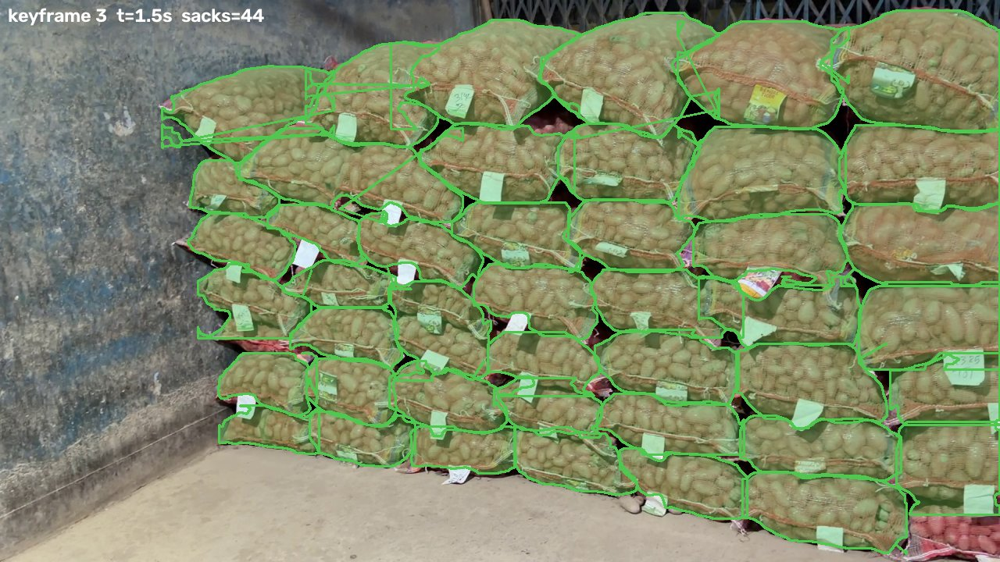

② On real godown footage

sacks separated in a single frame — each with its own outline
Day 1 → Day 2 aligned despite new angle, 4K vs 1080p and different light (CLIP + LoFTR)
③ Onion stack · 22 sacks compared
normalwarning
missingunverified
✓ Caught the front sack that was swapped between the two days
✓ Did not report sacks behind a pillar as “missing” — marked them unverified